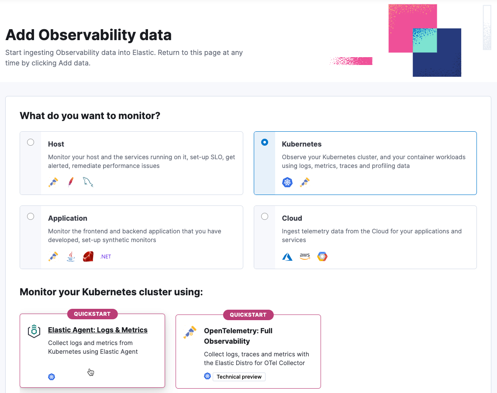

Quickstart: Monitor your Kubernetes cluster with Elastic Agent
editThis functionality is in technical preview and may be changed or removed in a future release. Elastic will work to fix any issues, but features in technical preview are not subject to the support SLA of official GA features.
In this quickstart guide, you’ll learn how to create the Kubernetes resources that are required to monitor your cluster infrastructure.
This new approach requires minimal configuration and provides you with an easy setup to monitor your infrastructure. You no longer need to download, install, or configure the Elastic Agent, everything happens automatically when you run the kubectl command.
The kubectl command installs the standalone Elastic Agent in your Kubernetes cluster, downloads all the Kubernetes resources needed to collect metrics from the cluster, and sends it to Elastic.
Prerequisites
edit-
A user with the
superuserbuilt-in role or the privileges required to onboard data. - A running Kubernetes cluster.
- Kubectl.
Collect your data
edit- In Kibana, go to Observability and click Add Data.
-
Select Monitor infrastructure, and then select Kubernetes.
 -
To install the Elastic Agent on your host, copy and run the install command.
You will use the kubectl command to download a manifest file, inject user’s API key generated by Kibana, and create the Kubernetes resources.
-
Go back to the Add Observability Data page.
There might be a slight delay before data is ingested. When ready, you will see the message We are monitoring your cluster.
- Click Explore Kubernetes cluster to navigate to dashboards and explore your data.
Visualize your data
editAfter installation is complete and all relevant data is flowing into Elastic, the Visualize your data section allows you to access the Kubernetes Cluster Overview dashboard that can be used to monitor the health of the cluster.
Furthermore, you can access other useful prebuilt dashboards for monitoring Kubernetes resources, for example running pods per namespace, as well as the resources they consume, like CPU and memory.
Refer to What is Elastic Observability? for a description of other useful features.